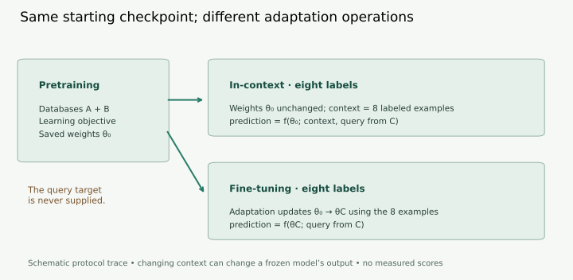
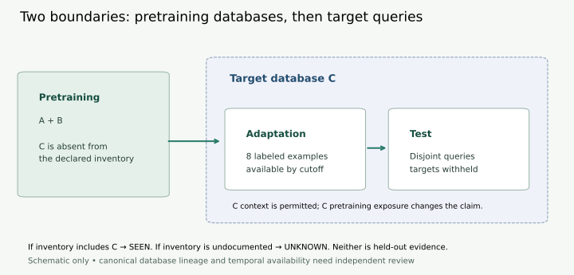

Year 5 · Quarter 1 · Lesson 161
What is a foundation model?
Quick reference · Scoping note · Reproduction contract · Audit output
1 · From one task to a reusable starting point¶
Single win: write a precise, testable scope for a relational foundation model. Read the core lesson in about 20 minutes, then use the notebook and write your note in a separate practice session. Route: define the reusable model → trace adaptation → locate the database boundary → defend a bounded claim.
In Lesson 159, predicting masked values supplied a training objective. It did not establish that what was learned helps a new task or database. Lesson 160 separated reproducible computation from sufficient evidence. Year 5 asks what could be reused across tasks, and how to test that reuse. The outstanding Year 4 exit requirements remain outstanding.
In plain terms. A foundation model is a reusable learned starting point. The important questions are what experience produced it and what different jobs it can support.
Bommasani and colleagues describe models trained on broad data and adaptable to a range of downstream tasks. Pretraining creates the reusable model; adaptation makes it useful for a particular task. Large parameter count alone does not supply those properties. The report also emphasizes that a foundation model is an intermediate component, not a complete deployed application. Primary reading: Bommasani et al., 2021, introduction.
A task specifies an input, a target and an evaluation rule. Pretraining is the earlier learning stage whose result is reused. A checkpoint is a saved set of learned parameters, or weights. Downstream identifies a later use of that checkpoint. Transfer means that prior learning is useful in that later setting; demonstrating benefit needs an appropriate comparison.
Before the adaptation table. A label is a known target used for learning or context. A gradient tells an optimizer how to change weights to reduce a chosen loss, the numerical penalty for wrong predictions. A forward pass computes predictions from the current inputs and weights; it need not update those weights. These are separate operations.
Worked example — a hypothetical research proposal. Pretrain one checkpoint on databases A and B. Adapt it to customer churn and delivery delay in database C. Compare it with models built independently for those tasks. This proposes reuse across tasks and a database boundary. It does not yet demonstrate either performance gain or sufficient breadth to justify the foundation-model description. Counting databases is not a substitute for explaining their diversity.
2 · Follow the information, not the label¶
Adaptation can change weights, add a learned task head, or condition prediction on examples. A backbone is the reusable representation-producing part. A head maps that representation to a task output. A context example is an input with its known target, supplied to inform another prediction. A query is the input whose target is withheld. These routes are discussed in the report's adaptation overview.
| Route in this lesson | Backbone at the target task | Target-specific information |
|---|---|---|
| Fine-tuning | Updated | An adaptation objective, often with labels |
| Frozen encoder + trained head | Frozen | Head updates, often with labels |
| In-context prediction | Frozen | Labeled examples supplied as context |
| Zero-shot prediction | Frozen | No target-task labeled examples or weight updates |
Zero-shot here means zero supplied target-task labeled examples. It does not mean no pretraining, no database features or no task description. Few-shot describes a small declared label budget; write the actual count, such as eight. It does not uniquely specify an adaptation algorithm. Fine-tuning and in-context prediction can both use eight examples. Our simplified four-route classifier gives weight updates priority for hybrid methods. It records the label count separately and does not classify every possible adaptation technique.


Trace the operation. Write prediction = f(weights; context, query). A semicolon separates learned weights from prediction inputs. Holding weights fixed still allows a changed context to alter the output. By contrast, fine-tuning replaces the initial weights with adapted weights. Lesson 61's PFN called this reuse of learned inference amortization: pay the learning cost earlier, then reuse the procedure.
What stays fixed in the explorer? The starting checkpoint and target query. Switch the update rule and label budget; trace which information can change. The explorer reports a protocol classification, not a predicted accuracy.
A no-gradient prediction can still require joins, neighborhood sampling, context construction and expensive attention. “One forward pass” describes a computation strategy; it is not a definition of a foundation model, a guarantee of low latency, or proof that every database fits. “Any database” is an especially strong generalization claim. The ordinary definition allows adaptation and does not require universal schema support.
3 · Hold out the right thing¶
For relational data, specify tables, typed columns, primary/foreign-key links, timestamps and the target entity at its query cutoff. A foreign key links a row to a row in another table. A cutoff is the time limiting information for a prediction. A schema specifies table/column structure and relationships. Transferring to a new schema is a different challenge from predicting new rows in a familiar one.
Worked example. A and B are pretraining databases. C supplies eight adaptation labels and disjoint test queries. C can remain held out from pretraining while legitimately supplying adaptation examples. If C was actually included in pretraining under an alias, that same test evaluates something else. New test rows cannot undo database-level exposure.


A useful evaluation has nested boundaries. First separate pretraining databases from the target database. Then, inside the target database, separate adaptation examples, validation decisions and test queries. In temporal tasks, context labels must already be available at each query's cutoff. Labels from the future remain illegal even when called “context.” This is a proposed course evaluation contract, not a benchmark specified by Bommasani's report.
Interpret the three states. HELD_OUT means the supplied nonempty inventory excludes C. SEEN means it includes C. UNKNOWN means the inventory is absent or empty. The code cannot discover undisclosed pretraining data, aliases, copies or mislabeled metadata. Canonical database identities must come from a source audit; our fixture names A/B/C are only illustrations. Unknown provenance is not proof of contamination, and it is not proof of independence.
Broad data requires a written argument. Discuss domains, schemas, task families and coverage limitations. Synthetic pretraining can cover many generated tasks; a single physical file can encode broad experience. Conversely, many near-duplicate databases can provide little diversity. This lesson deliberately avoids a numerical “FM threshold.”
4 · Reuse also shares limitations¶
The report highlights emergence: capabilities arising from the learned system rather than being individually programmed, and homogenization: many applications coming to depend on the same underlying model. Shared foundations can spread improvements, but can also transmit defects. The report motivates investigation; these terms do not establish that a particular relational model exhibits a new capability. Bommasani et al., abstract and introduction.
Relational thought experiment. Both churn and delivery prediction reuse a representation that discards all but the latest ten transactions. Suppose churn depends on recent activity, but delay depends on a year of recurring disruptions. Reusing the checkpoint does not restore the missing rows. A strong churn result cannot validate the delay task. This is a constructed reasoning example, not a measured failure of a named model.
The practical response is to write falsifiable tests: compare different history requirements, inspect excluded records, and use matched information budgets. Keep the supervised RDL and feature-engineering baselines from Year 4. Foundation-model status alone does not imply superiority over them.
5 · Turn a vision into a scope note¶
Complete the template in 400–600 words. Make one proposal small enough that its success or failure could be observed.
| Scope field | A reviewable answer must name |
|---|---|
| Inputs | Tables, keys, types, time policy, task query and schema limits |
| Pretraining | Corpus identity/version, diversity, objective and checkpoint lineage |
| Adaptation | Updated parameters, label/context count, preprocessing and selection rules |
| Evaluation | Held-out databases, target splits, eligible context and unseen-schema claims |
| Comparison | Baselines with comparable information, labels and declared compute/search budgets |
| Success and failure | Per-task metric, direction, threshold, uncertainty and disconfirming outcome |
Illustrative success criterion. On prespecified held-out database C, compare paired MAE differences for delay and paired AUROC differences for churn against the same-label baseline. MAE is average absolute prediction error; lower is better. AUROC measures ranking across positive and negative classes; higher is better. Declare a useful improvement threshold and an uncertainty procedure before test evaluation. Do not average raw MAE and AUROC. Repeated seeds measure some training variation; they do not supply new databases. This is an example of writing a criterion, not a request to run that experiment here.
6 · Practice: make the audit resist an attractive claim¶
The standalone notebook provides 15 synthetic protocol records. Implement three functions: adaptation_route, database_boundary, and scope_verdict. All three are called by the actual audit. The first two trace information access. The third identifies contradictions in a proposed cross-database comparison: leaked labels, test-led selection, unreviewed time policy, missing matched baseline, lack of a shared initial checkpoint, and a wrongly named adaptation route.
Predict which record fails before each CHECK. Explain why eight legal target-context examples do not imply pretraining overlap. Then change one field in a failed record and explain which issue remains.
Repair a plan one contradiction at a time. Start with the otherwise valid A/B → C fixture: zero backbone updates, zero head updates, eight legal adaptation labels, and execution not yet complete. It incorrectly declares zero-shot prediction and selects its settings on test.
| Change | Remaining issue | Status |
|---|---|---|
| Initial plan | Test selection; wrong route name | Revise |
| Select on validation | Wrong route name | Revise |
| Declare in-context prediction | None in this audit | Ready to run |
Renaming the adaptation route fixes a description, not the actual selection leak. Moving selection to validation fixes that separate protocol problem. Eight adaptation labels still do not place C in the pretraining inventory. Try it: mark the corrected record completed without attaching predictions. Check: its status becomes READY_FOR_REVIEW, but transfer performance remains unestablished; the flag requests evidence review and is not evidence itself.
Status is deliberately narrow. READY_TO_RUN means the supplied plan passes these consistency rules. READY_FOR_REVIEW means a record also declares execution complete; source artifacts and actual predictions still require inspection. REVISE names remaining contradictions or missing evidence. None establishes the foundation-model label, a measured transfer gain, universal database support or learner mastery. Passing a temporal_audit=PASS declaration cannot authenticate an audit.
Executed author audit: all 15 synthetic records are included: 4 READY_TO_RUN, 1 READY_FOR_REVIEW and 10 REVISE. These counts describe fixtures, not models or databases. Complete output.
Full-reproduction boundary. This introductory source is a synthesis report. No named relational numerical benchmark is selected for this lesson, and no report-wide numerical reproduction is claimed. The executable local target is the complete 15-record scope audit. No model is trained. Transfer performance remains NOT_ESTABLISHED. A future performance reproduction needs its own exact paper table, source/code/data pins, all seeds and search trials, and aggregate budget approval. Contract and source audit.
7 · Defend, then revisit¶
Submit the completed notebook and your 400–600-word scope note. A teacher scores definition, data/provenance, adaptation, evaluation, and evidence boundaries from 0–2 each; target at least 8/10 with no zero. Automated checks are feedback, not a substitute for this review. Learner status stays PENDING_WRITTEN_DEFENSE until your own submission is assessed.
Tomorrow, reconstruct the four adaptation routes without looking. In one week, audit a proposal whose target database was renamed before pretraining. Ask the teaching agent about any unclear step or paste your scope note for feedback.
Read next: the introduction and adaptation discussion of Bommasani et al. (2021), with the author overview. Lesson 162 applies this scope to the relational foundation-model vision. Read Year 5 concepts while preserving Year 4's pending evidence gates.